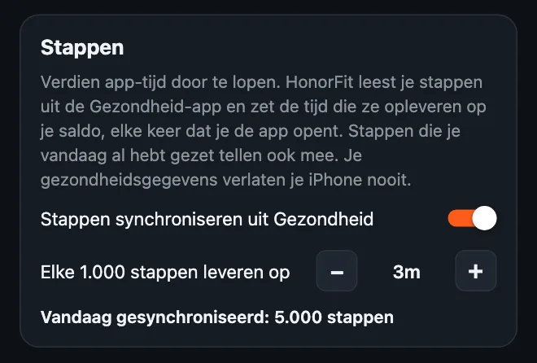
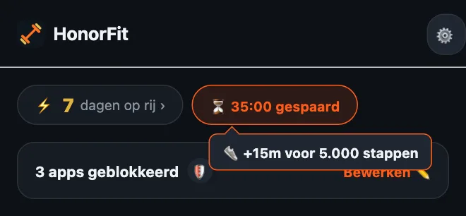

Je stappen leveren nu schermtijd op
Hoi allemaal! Even kort over de nieuwste functie in HonorFit, die rechtstreeks uit een mailtje van een gebruiker kwam. HonorFit is de app blocker waarmee je je schermtijd verdient met push-ups (of squats, of kegeloefeningen, of wat je maar kiest), op erewoord. Geen camera.
Een gebruiker vroeg: mijn telefoon telt mijn stappen al, dus waarom leveren die geen tijd op? Goeie vraag. Dus nu doen ze dat wel. HonorFit kan je stappen lezen uit Gezondheid (Apple Health) op de iPhone of uit Health Connect op Android, en er automatisch app-tijd van maken.
Zo zet je het aan
- Update HonorFit naar 1.18.0 of nieuwer.
- Tik op het startscherm op het tandwiel en zoek de kaart Stappen.
- Zet Stappen synchroniseren uit Gezondheid (iPhone) of Stappen synchroniseren uit Health Connect (Android) aan.
- Sta Stappen toe als je telefoon erom vraagt. HonorFit vraagt alleen om je stappen te lezen. Verder niks.
Dat is alles. De stappen die je vandaag al hebt gezet, tellen meteen mee, en onder de schakelaar zie je ‘Vandaag gesynchroniseerd’ met je aantal stappen.

Op Android heb je Health Connect nodig, dat vanaf Android 14 is ingebouwd. Op oudere telefoons stuurt HonorFit je naar Google Play om het te installeren. Je hebt ook iets nodig dat stappen in Health Connect zet, zoals Google Fit, Samsung Health of Fitbit. Dat je telefoon ergens stappen telt, betekent niet altijd dat hij ze ook deelt.
Hoeveel tijd leveren stappen op?
Standaard leveren elke 1.000 stappen 3 minuten op. Dat kun je direct onder de schakelaar aanpassen, van een fractie van een seconde tot zoveel als je wilt.
| Stappen | Bij 3 min per 1.000 (standaard) | Bij 5 min per 1.000 |
|---|---|---|
| 2.000 (ongeveer 20 minuten wandelen) | 6 minuten | 10 minuten |
| 5.000 | 15 minuten | 25 minuten |
| 10.000 | 30 minuten | 50 minuten |
Zo zou ik kiezen: bij een rustige wandeling zet je ongeveer 100 stappen per minuut, plus of min. Heb je een oefening Wandelen op tijd ingesteld met de standaardwaarde van 30 seconden per minuut, dan zijn je stappen en je gelogde wandelingen met ongeveer 5 minuten per 1.000 stappen zo’n beetje evenveel waard. Loop je sowieso veel (de hond, woon-werkverkeer, een baan waarin je de hele dag staat), zet het dan lager, zodat je apps niet elke dag gewoon gratis van het slot gaan.
Wanneer verschijnen je stappen?
Elke keer dat je HonorFit opent. Ook als je het opent vanaf het vergrendelscherm omdat een geblokkeerde app geen tijd meer heeft. HonorFit leest je totaal van vandaag, zet de stappen sinds de vorige keer op je saldo en laat op het startscherm een klein ‘👟 +15m voor 5.000 stappen’ zien.

Dus zo doe je het: ga wandelen, open daarna HonorFit, en je tijd staat klaar. Je krijgt nooit twee keer betaald voor dezelfde stappen. Was de vorige synchronisatie gisteren, dan worden de stappen die je gisteravond nog hebt gezet eerst bij gisteren opgeteld. Staat ‘Om middernacht resetten’ aan, dan zie je die late stappen wel terug in de geschiedenis van gisteren, maar leveren ze vandaag geen tijd op, omdat het saldo van gisteren al is gereset.
HonorFit leest je stappen niet op de achtergrond, alleen als je de app opent. Je stappengeschiedenis staat in Geschiedenis, in een eigen weergave Stappen.
Is het gratis?
Jep, stappen synchroniseren is gratis, en er zit geen maximum op het aantal stappen. De enige limiet van de gratis versie die meetelt, is de bekende: gratis spaar je tot 2 uur app-tijd op. Is je saldo vol, dan gaan stappen daarboven niet mee naar later. Met Pro (in de VS $3 per maand of eenmalig $19,99) spaar je onbeperkt tijd op.
Nog twee kleine dingen: de zware modus en de ziekmodus veranderen alleen wat je reps waard zijn, niet je stappen. En stappen tellen niet als workout voor je reeks. Daarvoor moet je wat reps doen.
Even eerlijk, over het erewoord: als je een wandeling logt als oefening op tijd en je stappen synchroniseert, krijg je twee keer betaald voor dezelfde wandeling. Niemand houdt je tegen, maar kies er één. Mijn tip: laat je stappen het gewone rondlopen dekken, en log workouts voor echte workouts.
Zie je 0 stappen?
- iPhone: iOS vertelt apps nooit of je hebt geweigerd dat ze je stappen lezen. Het geeft gewoon nul door. Open de app Gezondheid, tik op je profielfoto, dan op Apps → HonorFit, en zet Stappen aan.
- Android: open Health Connect (de kaart Stappen in HonorFit toont een knop Health Connect openen als hij geen stappen vindt) en controleer of HonorFit Stappen mag lezen. Controleer daarna of je stappen-app, zoals Google Fit, Samsung Health of Fitbit, stappen in Health Connect zet.
- Ga dan terug naar HonorFit. Het kijkt opnieuw zodra je weer in Instellingen bent.
En mijn gezondheidsgegevens?
HonorFit leest één ding: je aantal stappen. Het schrijft nooit iets naar Gezondheid of Health Connect, en het getal gaat nooit van je telefoon af. Er is geen account en geen server waar het heen zou kunnen. Alle details staan in het privacybeleid (Engels).
Heb je ook zulke ideeën? De supportpagina (Engels) komt rechtstreeks in mijn inbox terecht. Deze hele functie bestaat omdat iemand me schreef.
HonorFit Blocker is een gratis app blocker voor iPhone en Android. Verdien schermtijd met push-ups, elke oefening die je kiest, en nu ook met je stappen. Op erewoord, geen camera, en er gaat niks van je telefoon af.